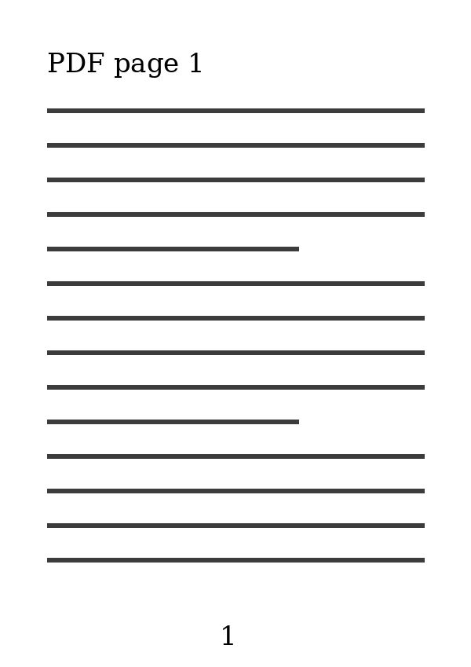
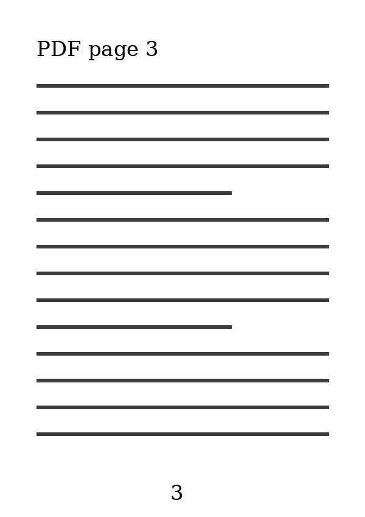
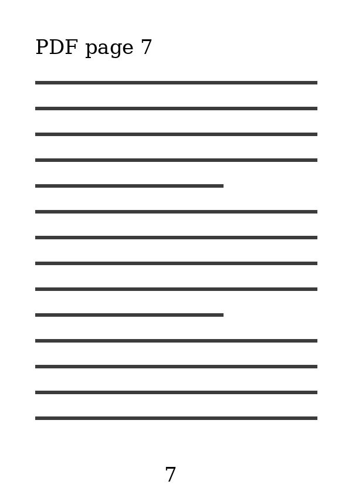
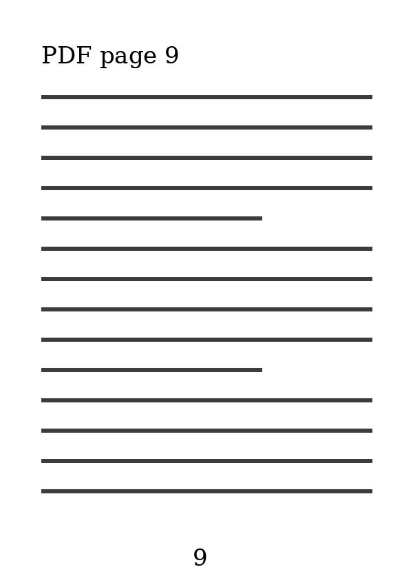
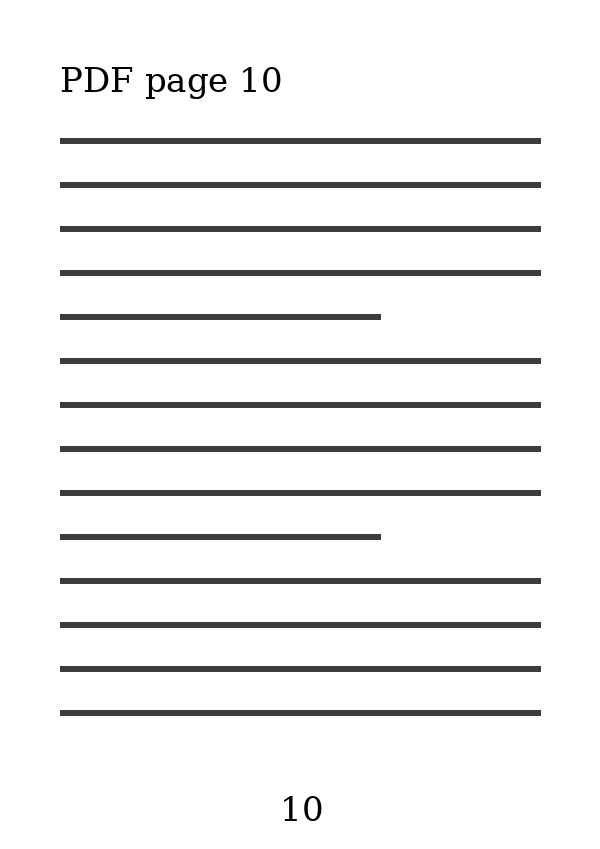

Page 1 paragraph 1. The rain had stopped and the streets were quiet; somewhere a dog barked twice and fell silent again.
Page 1 paragraph 2. The rain had stopped and the streets were quiet; somewhere a dog barked twice and fell silent again.
Page 1 paragraph 3. The rain had stopped and the streets were quiet; somewhere a dog barked twice and fell silent again.
Page 2 paragraph 1. The rain had stopped and the streets were quiet; somewhere a dog barked twice and fell silent again.
Page 2 paragraph 2. The rain had stopped and the streets were quiet; somewhere a dog barked twice and fell silent again.
Page 2 paragraph 3. The rain had stopped and the streets were quiet; somewhere a dog barked twice and fell silent again.

Page 3 paragraph 1. The rain had stopped and the streets were quiet; somewhere a dog barked twice and fell silent again.
Page 3 paragraph 2. The rain had stopped and the streets were quiet; somewhere a dog barked twice and fell silent again.
Page 3 paragraph 3. The rain had stopped and the streets were quiet; somewhere a dog barked twice and fell silent again.
Page 4 paragraph 1. The rain had stopped and the streets were quiet; somewhere a dog barked twice and fell silent again.
Page 4 paragraph 2. The rain had stopped and the streets were quiet; somewhere a dog barked twice and fell silent again.
Page 4 paragraph 3. The rain had stopped and the streets were quiet; somewhere a dog barked twice and fell silent again.
Page 5 paragraph 1. The rain had stopped and the streets were quiet; somewhere a dog barked twice and fell silent again.
Page 5 paragraph 2. The rain had stopped and the streets were quiet; somewhere a dog barked twice and fell silent again.
Page 5 paragraph 3. The rain had stopped and the streets were quiet; somewhere a dog barked twice and fell silent again.
Page 6 paragraph 1. The rain had stopped and the streets were quiet; somewhere a dog barked twice and fell silent again.
Page 6 paragraph 2. The rain had stopped and the streets were quiet; somewhere a dog barked twice and fell silent again.
Page 6 paragraph 3. The rain had stopped and the streets were quiet; somewhere a dog barked twice and fell silent again.

Page 7 paragraph 1. The rain had stopped and the streets were quiet; somewhere a dog barked twice and fell silent again.
Page 7 paragraph 2. The rain had stopped and the streets were quiet; somewhere a dog barked twice and fell silent again.
Page 7 paragraph 3. The rain had stopped and the streets were quiet; somewhere a dog barked twice and fell silent again.
Page 8 paragraph 1. The rain had stopped and the streets were quiet; somewhere a dog barked twice and fell silent again.
Page 8 paragraph 2. The rain had stopped and the streets were quiet; somewhere a dog barked twice and fell silent again.
Page 8 paragraph 3. The rain had stopped and the streets were quiet; somewhere a dog barked twice and fell silent again.

Page 9 paragraph 1. The rain had stopped and the streets were quiet; somewhere a dog barked twice and fell silent again.
Page 9 paragraph 2. The rain had stopped and the streets were quiet; somewhere a dog barked twice and fell silent again.
Page 9 paragraph 3. The rain had stopped and the streets were quiet; somewhere a dog barked twice and fell silent again.

Page 10 paragraph 1. The rain had stopped and the streets were quiet; somewhere a dog barked twice and fell silent again.
Page 10 paragraph 2. The rain had stopped and the streets were quiet; somewhere a dog barked twice and fell silent again.
Page 10 paragraph 3. The rain had stopped and the streets were quiet; somewhere a dog barked twice and fell silent again.